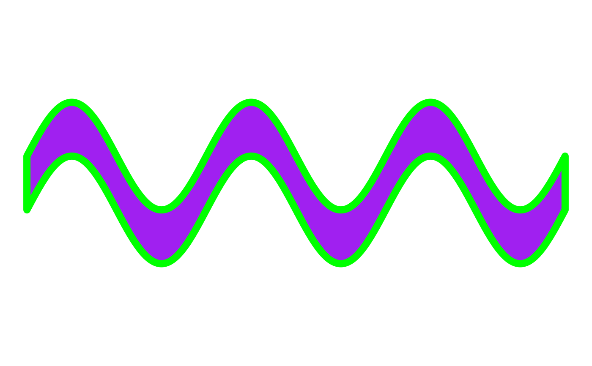

Data Generation for 2D Sine and Cosine Waves
wave_data.RdA tool for making data frames filled with data that displays sine or cosine waves when graphed.
The geom_path and geom_polygon geoms are recommended with this data for use in ggplot2 for generative art.
Usage
wave_data(
start,
end,
size = 1,
type = "sin",
rotate = NULL,
orientation = "horiz",
freq = 3,
n_points = 1000,
color = NULL,
fill = NULL,
group = FALSE,
dampen = NULL,
amplify = NULL
)Arguments
- start
Numeric value. The starting point of the wave on the coordinate system.
- end
Numeric value. The ending point of the wave on the coordinate system.
- size
Numeric value. The height or width of the wave. Orientation is set to
horizontalby default, thus size will affect height by default. When orientation is set tovertical, size controls the width of the wave.- type
String value. "sin" or "cos" for sine or cosine waves.
sinis default.- rotate
Optional. If rotation is desired, accepts a numerical value between -360 to 360 to rotate the wave by input degrees.
- orientation
String value. Default is
horizontalwhich will draw the wave from left to right on the coordinate system.verticalwill draw the wave from bottom to top on the coordinate system.- freq
Numeric value. Default is 3 cycles per second. This affects how many "peaks" are created in the wave. Must be a positive numeric value.
- n_points
Numeric value. Default is 1000. This determines how many points each half of the wave will have. This option can come in handy when using jitter options or other texture/illusion methods.
- color
Optional. A hex color code, or
Rcolor string for the border color of the wave.- fill
Optional. A hex color code, or
Rcolor string for the fill color of the wave.- group
Logic value.
TRUEorFALSE. Default isFALSE. IfTRUE, Adds a group variable to the data frame. Useful for iterative work to make multiple waves in a single data frame.- dampen
Optional. A factor in which to dampen the wave (make "flatter").
- amplify
Optional. A factor in which to amplify the wave (make "sharper").
Examples
library(ggplot2)
wave_df <- wave_data(start = 0, end = 10,
fill = "purple",
color = "green")
wave_df |>
ggplot(aes(x,y))+
theme_void()+
geom_polygon(fill = wave_df$fill,
color = wave_df$color,
linewidth = 3)+
coord_equal()
